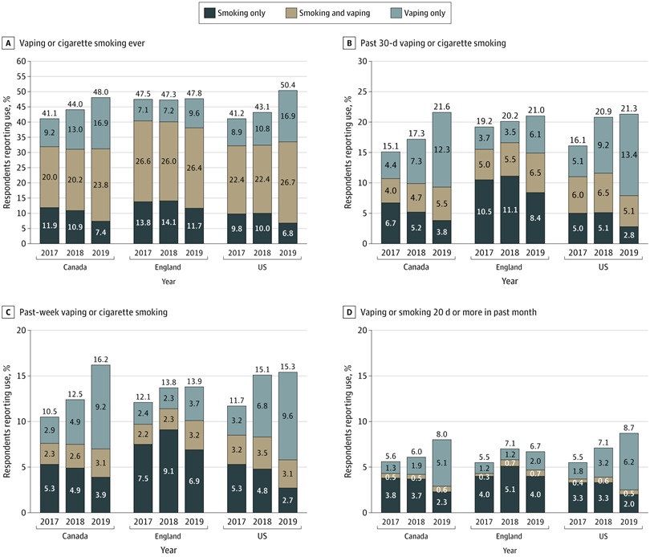
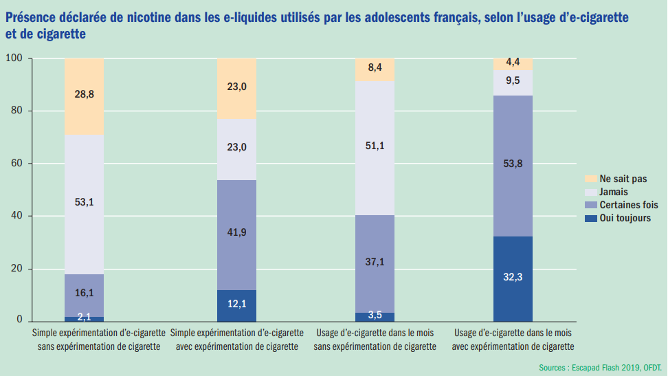

Avant de se pencher sur l'étude que nous avons menée, nous avons observé divers travaux d'associations et d'organismes médicaux. Ces multiples sources, venant de pays différents où la cigarette électronique est ou a été légale et populaire, nous a permis d'observer une baisse du tabagisme classique mais également une montée (parfois alarmante) de l'utilisation de la cigarette électronique chez les jeunes.
Les résultats montrent une forte augmentation du vapotage chez les jeunes en Amérique du Nord par rapport à l'Angleterre. Entre 2017 et 2019, le nombre de jeunes vapoteurs réguliers a doublé au moins au Canada et aux États-Unis. Malgré une prévalence plus élevée chez les jeunes qui fument déjà, ceux qui ne fument pas représentent un plus grand nombre de vapoteurs réguliers en 2019. Ces augmentations sont liées à la popularité croissante des produits de sel de nicotine comme Juul, avec des concentrations de nicotine bien plus élevées. En Angleterre, les e-cigarettes sont soumises à des restrictions publicitaires plus strictes et à une concentration maximale de nicotine de 20 mg/mL. Les limites de l'étude incluent un échantillon non représentatif et des biais potentiels liés aux enquêtes auto-déclarées. Malgré tout, les résultats soulignent une hausse significative du vapotage chez les jeunes aux États-Unis et au Canada, suggérant une influence majeure de la consommation des jeunes sur le marché des e-cigarettes depuis 2017. L'impact de l'environnement réglementaire et commercial différent en Angleterre mérite une attention particulière1.

Entre 2017 et 2021, le nombre de non-fumeurs qui vapotent a plus que doublé, avec un taux de vapotage de 13,9 % chez les 12-18 ans et de 13,4 % chez les 12-24 ans en 2021. Au Québec, le taux de vapotage chez les 12 ans et plus est passé de 3,8 % à 5,3 % sur la même période. De plus, tandis que le nombre d'anciens fumeurs qui vapotent a augmenté de 48 725, celui des non-fumeurs vapoteurs a connu une croissance de 61 493, ce qui équivaut à une augmentation nette de 5 vapoteurs non-fumeurs pour chaque augmentation de 4 vapoteurs anciens fumeurs. Parmi les non-fumeurs vapoteurs, 86 % sont des jeunes ou des jeunes adultes. Le vapotage est 3,6 fois plus fréquent chez les 12-24 ans que chez les 25 ans et plus, et la grande majorité des jeunes vapoteurs n'en tire aucun avantage en matière d'arrêt tabagique. En outre, l'augmentation significative du vapotage chez les anciens fumeurs au Québec entre 2017 et 2021 ne semble pas être associée à une hausse de l'arrêt tabagique2.
L'utilisation déclarée de nicotine dans les e-liquides est étroitement liée au statut tabagique des jeunes interrogés, avec une prévalence plus élevée chez ceux qui ont déjà fumé des cigarettes. Les adolescents ont des perceptions mitigées concernant l'e-cigarette, avec 50,4 % estimant qu'elle est moins nocive que la cigarette, tandis que 7,9 % la considèrent comme plus nocive. Parmi ceux qui ont vapoté au moins une fois au cours des trente jours précédant l'enquête, les motivations d'usage incluent principalement l'attrait pour le goût et la diversité des parfums (47,8 % et 47,3 % respectivement), ainsi que la perception d'une meilleure odeur par rapport au tabac (37,1 %). La réduction ou l'arrêt de la consommation de tabac ne figure pas parmi les principales motivations (28,5 %), tandis que certains mentionnent la possibilité d'utiliser l'e-cigarette en alternance avec le tabac ou la chicha (27,3 %), le prix moins élevé (26 %) et l'aspect ludique de la fumée (avec plusieurs réponses possibles)3.

Afin de vérifier nos informations, nous avons réalisé un sondage auprès de la population de l'ISEN (tranche 18-25 ans) et avons comparé nos résultats avec d'autres enquêtes réalisées par des organismes dédiés.
réponses
fumeurs de CE
fumeurs de cigarettes
pensent que c'est un effet de mode